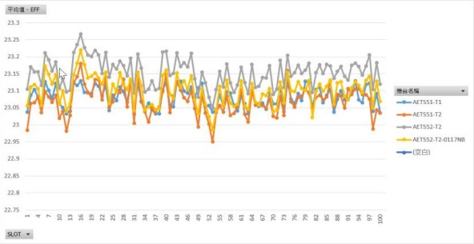

電子相簿是一種用於儲存、分享和管理數位照片和視頻的數位工具。提供一個方便的平台，讓用戶可以輕鬆地保存和訪問他們的照片集合，同時分享這些內容。
我的個性謙和樂觀，待人和善。我具有良好的團體溝通、靈機應變和執行能力，並曾在製程工程師職位上工作。近期，我致力於進修雲端課程，以提升自己的知識和技能。我喜歡學習新事物，並勇於面對挑戰。
在高雄科技大學碩士畢業後即投入太陽能產業 7 個月，擔任製程工程師的職位。這段時間讓我有機會參與各種製造流程的優化和改進，以提高生產效率和品質控制，並讓我熟悉了工程領域的工作流程。
近期我開始思考我的職業發展和個人目標。希望找到一個更具技術挑戰性和創造性的環境，並將我的分析和問題解決能力應用於軟體開發領域，我在養成班學了不同的程式語言，例如 Python 和 CSS 等，並通過參與養成班的課程和開發個人項目來加深我的理解。這些學習過程中，我逐漸熟悉了前後端開發的基礎原理，包括資料庫管理、爬蟲和 Linux 管理及系統架構等方面。
個人資訊
聯絡電話+886-0902169882
E-mailyuchenglee345@gmail.com
個人作品網頁展示https://hackmd.io/@sean986/ry4Q2r6wh
製程工程師／元晶太陽能科技股份有限公司 |
2022/08/23 ~ 2023/03/26
工作內容
檢測和分析、預防和持續改進、品質控制和測試數據分析：使用 Excel 樞紐分析大量的數據，並匯出平面折線圖來解釋數據，以幫助管理層做出決策。
返上
| 系統建置 | 雲端計算平台 | 程式語言 |
| ‧Linux 系統 | ‧AWS | ‧Python |
| - ubuntu20.04 | ‧GCP | ‧C++ |
| ‧Windows 系統 | ||
| - windows2019 | 資料庫 | Git 應用 |
| ‧關聯式資料庫 | Docker 架設管理 | |
| DevOps 開發維運 | - MariaDB | 大數據分析平台 |
| ‧Ansible | ‧非關聯式資料庫 | ‧ELK |
| ‧GitHub | - MongoDB | ‧Splunk |